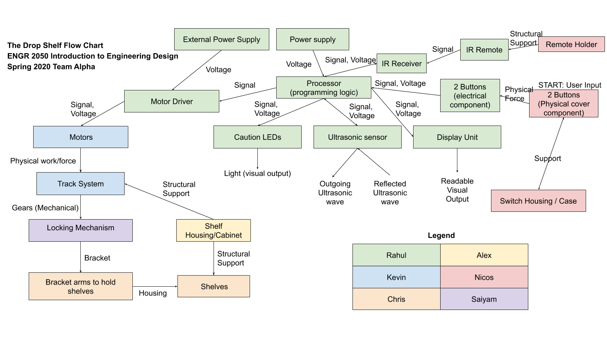
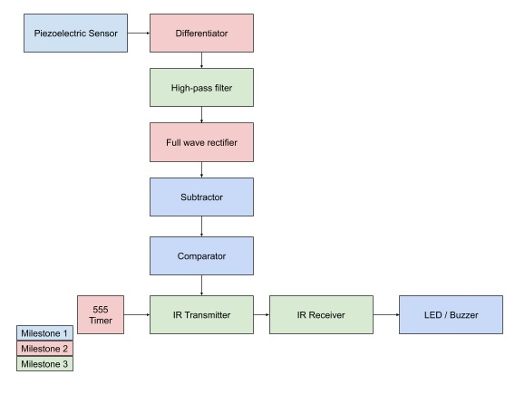
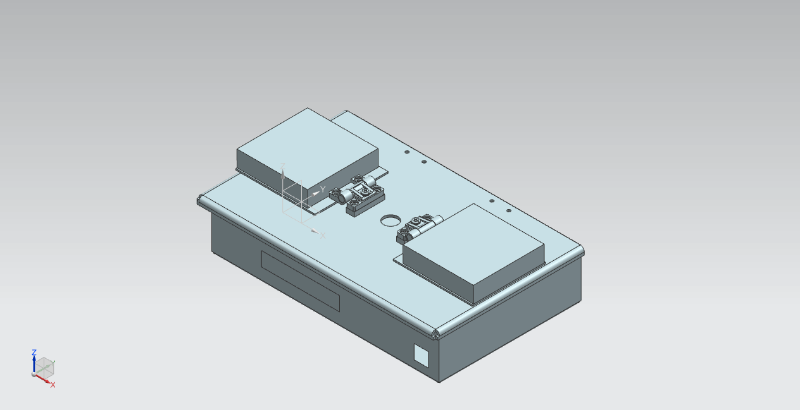
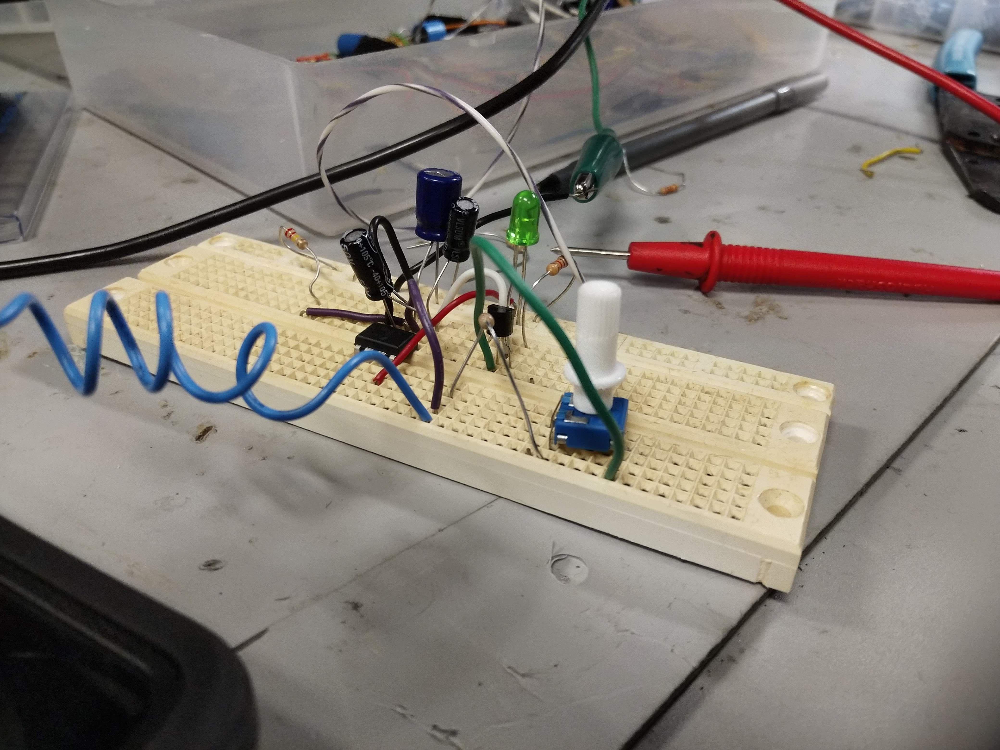

The Drop Shelf Motorized Shelf Design- ENGR 2050 Introduction to Engineering Design (Spring 2020)
The Drop Shelf was a group engineering design project which involved the design of a motorized shelving unit. The group consisted of six interdisciplinary engineering students from majors including Mechanical Engineering, Electrical & Computer Systems Engineering, Aeronautical Engineering, Industrial Engineering, and Biomedical Engineering. A comprehensive prototype of the motorized shelving unit was created through different simulation packages including Siemens NX and TinkerCAD Arduino Simulator. As the Electrical and Computer Systems project lead, I created a short demonstration video to explain the four different test cases that could exist for the different inputs and outputs to the subsystem. The key function of the subsystem is to process and interpret the different inputs (physical force from pushbuttons / IR remote buttons) and translate them into appropriate outputs (stepper motor signals, LED pulses, LCD text).
Omega Lab: Earthquake Detection Module Design- ECSE 2010 Electric Circuits (Spring 2020)
Omega Labs are a group design based lab experience where I was able to design a circuit based on concepts learned in the course. For this project, our group has used a piezoelectric film sensor to create a circuit that would notify users about impending earthquakes in the area. This concept design aims to take piezoelectric sensor signals to detect legitimate high frequency earthquakes. Our design is intended to take high frequency signals detected by the piezoelectric sensor and compare them to a threshold value (calibrated based on location) to determine whether an earthquake is occurring. The theoretical circuit model that we created includes the components seen in the block diagram.
Line Following Car - ENGR 2050 Introduction to Engineering Design (Spring 2020)

In this mini-project the engineering design process was applied to create a line-following car. First, the problem of having a small car follow a 0.75" thick black line was identified and various needs, requirements, and project specifications were considered. Different solutions to this problem were researched and benchmarked. After this, the IR sensing method was chosen and the car was designed with an adjustable mounting system. Although the hardware was configured for 5 sensors the software was only developed for 3 as testing revealed that the outermost sensor did not help the operation of the car. Above is a short video showing some of the test runs that were conducted.
Bench-Top Testing of Gondola Hardware and Software - ENGR 2350 Embedded Control (Fall 2019)

The main purpose of this experiment was to refactor code from the Smart Car to control drive motors and a steering servo which in turn controls the various fans on the Gondola. Specifically, we used the capture compare modules (CEX) pins to control the thrust fan angles, power of the tail fan, and power of the left and right thrust fans. The terminal (PuTTy) was used to collect data, and to change variables such as the desired heading with a keypress. A voltage divider was also used to measure the battery voltage from an analog input. Additionally, while the program runs, the current control settings such as the current range, current heading, and battery voltage are displayed on the LCD Display.
Smart Car Accelerometer Integration, Slope-directed Steering - ENGR 2350 Embedded Control (Fall 2019)

The main purpose of this experiment was to continue to use code from previous labs to control the drive motors and steering servo on the Smart Car and use a new control strategy that used data from the accelerometer instead of the ranger and the compass. The readings from the accelerometer are used to steer and drive the car up and down a ramp and stop when it reaches a flat surface. For our testing, we had the car start on a ramp perpendicular to the top and have it turn and drive up the ramp. Once it reached the top of the ramp we sent a signal via the space bar through the terminal and the car then moved back down the ramp to perform a two-point turn and turn down the ramp and travel to the bottom and stop on the flat surface after it left the ramp. The terminal (PuTTy) was used to collect data and send commands to the car while the program was running. A voltage divider was also used to measure the battery voltage from an analog input, and another analog input was used to set a control gain value using a potentiometer. Additionally, while the program runs, the current gains, x and y acceleration values, and the battery voltage are displayed on the LCD screen.
Simple "Elevator" Controller Design- ECSE 2610 Computer Components and Operations (Fall 2019)

A simple elevator design problem control circuit was created in this experiment. The basic features in this design included having the user be able to specify the floor they wish to go to with the use of 2 switches, LED display to show movement of elevator up/down, and a 7 segment display to show the current floor. Some additional features implemented were a push button start so the elevator will only start when a switch is toggled and an emergency code so the elevator stops and displays 4 + current floor.
Multiparty Meeting Annotation - Undergraduate Research Project (Fall 2019 - Spring 2020)
This research project, under Professor Radke at RPI, aims to look at the design of human-scale, occupant aware environments. Specifically, the goal of the research project is to design an intelligent meeting room that is able to provide facilitation services to increase meeting productivity. Some examples of services that may increase productivity include identifying meeting participants, understanding conversations, summarizing discussions, and helping a group go through a meeting agenda and make decisions. The research group is designing a compact tabletop device that has cameras, microphones, and range sensors so participants are not required to wear microphones or other sensors. This project is supported by the National Science Foundation's PFI:BIC.
Furthermore the research aims to better understand the dynamics of a group meeting. To do this, the research group conducts multi-person meetings and records video/audio with a prototype device and is looking at ways to extract information regarding dominant leaders and contributors of a conversation. This information may then be used to provide services such as keeping track of time allocated to topics or detecting changes in productivity due to inattentiveness.
As part of the research team, I reviewed and performed analysis of human dynamics in face-to-face small group settings such as analyzing human emotions during conversations. To help others in the research group design the algorithms, I specifically annotated audio data to help train the machine learning algorithms and designed a case for the tabletop device.
OpenCircuits - RCOS (Spring 2019)

OpenCircuits is an open source, online, free, and easy to use circuit designer. I have been a member of the team since Spring 2019 through Rensselaer Center for Open Source (RCOS). Our project features the ability to create simple to very complex circuits, IC's with an easy to use interface and the ability to save/load circuits. I have mainly been involved in various unit testing for OR & XOR gates, RotateTool, ToolManager, and other tools. I learned how to use Git with GitHub and work with JavaScript/Typescript.
Passive Frequency Detection - RCOS (Fall 2018)
Passive Frequency Detection is a hardware-based, non-invasive project to detect wireless transmissions in an area. The project is non-invasive and uses passive frequency detection circuits to alert at the presence of a signal transmission without identifying the device name or data associated with that signal. Over the course of the semester, the team and I created a prototype device and were able to detect some signals from a cellular device. One potential application of this technology is to allow authorized groups (search and rescue teams, professors in class, government facilities) to detect wireless transmissions of a variety of frequencies.